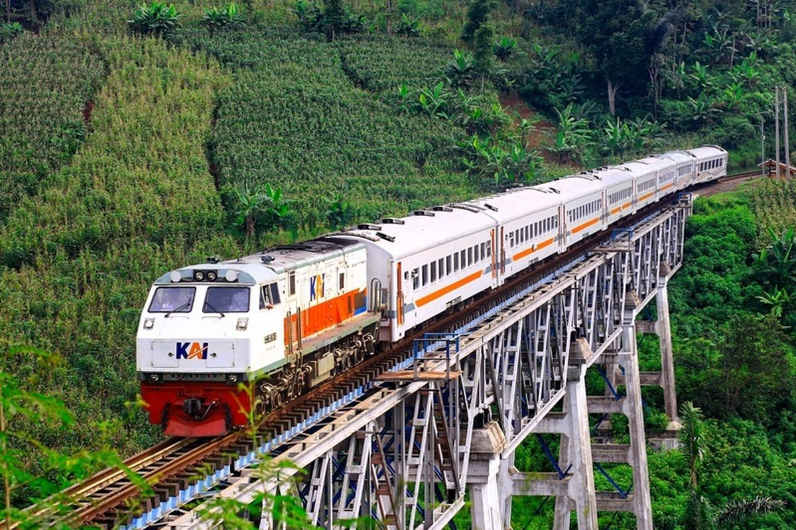
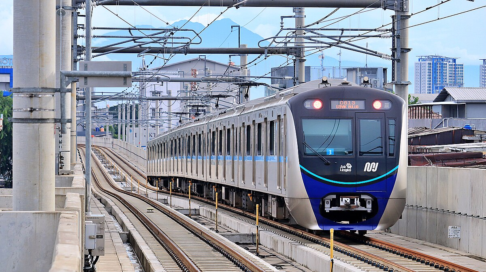
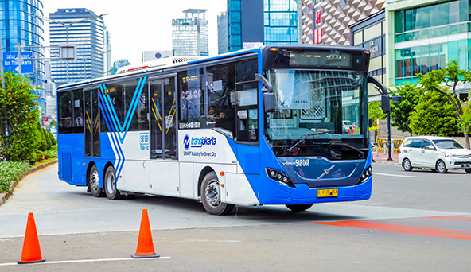
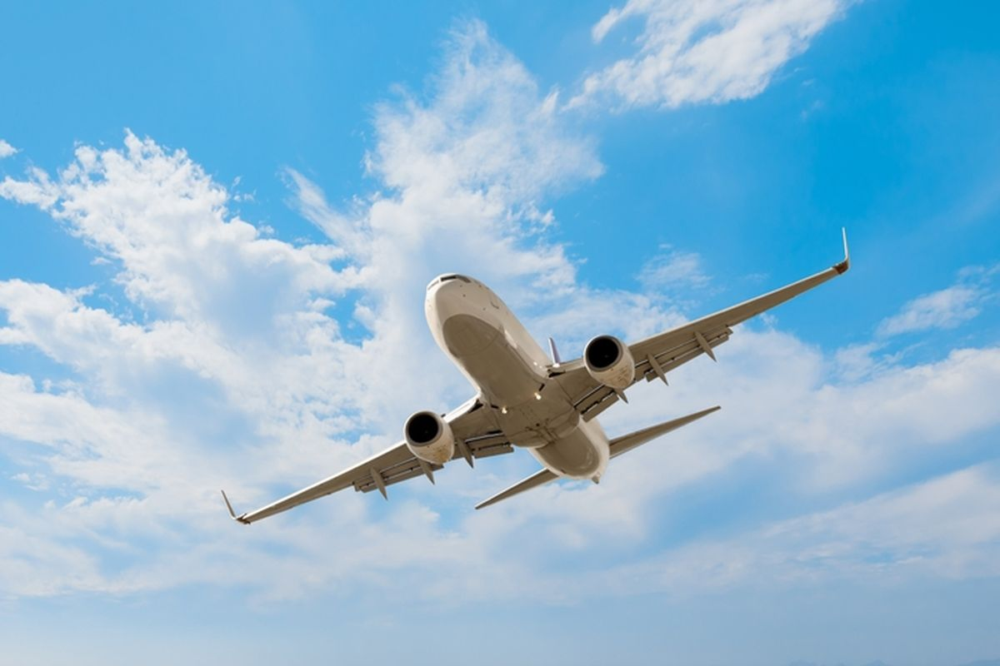

"Contemporary Transportation"
Transportasi Kontemporer Masa Kini
Transportasi di era ini, sudah mengalami berbagai macam
inovasi yang mengubah cara orang dan barang berpindah di seluruh dunia. Di mana dengan
bantuan teknologi yang sudah semakin berkembang membuat transportasi menjadi lebih cepat,
efisien, serta lebih terjangkau bagi masyarakat luas. Dilansir dari kumparan.com
Fasilitas transportasi massal mampu menekan angka pemakaian kendaraan pribadi.
Menurut buku Ilmu Lingkungan, Penerbit Tohar Media (2023:79), banyak negara maju
yang telah merealisasikan sistem angkutan massal sebagai alat transportasi utama
di perkotaan contohnya Jepang, Perancis, Swedia, Inggris, dan Jerman.Beberapa contoh
alat transportasi massal modern yang banyak digunakan masyarakat antara lain:
- Kereta Api merupakan transportasi massal sejak tahun 1800-an.
Transportasi ini dimanfaatkan untuk berbagai keperluan masyarakat hingga
sekarang, mulai dari mengangkut barang hingga penumpang.
Melihat permasalahan mobilitas masyarakat di beberapa kota-kota besar di
Indonesia, kereta api dirasa sanggup menjadi salah satu solusi transportasi
massal masa depan.

- MRT (Moda Raya Terpadu) MRT memiliki kecepatan tinggi yaitu 80-100 km/jam.
Alat transportasi massal modern ini sangat membantu mobilitas masyarakat ke
sejumlah tempat. Satu set rangkaiannya mampu membawa 1.200-1.800 penumpang.
MRT memiliki visi menjadi penyedia jasa transportasi publik terdepan yang
berkomitmen untuk mendorong pertumbuhan ekonomi. Alat trasnportasi ini
memanfaatkan listrik sebagai tenaga gerak.

- Busway atau Transjakarta, Angkutan ini dikenal bebas hambatan. Busway
adalah sistem transportasi bus cepat, di Jakarta dikenal dengan nama Transjakarta.
Bus ini memiliki jalur khusus sesuai rute yang dilewatinya. Busway memiliki target
mengangkut sekitar 40.000 penumpang per jam dalam satu arah.

- Pesawat merupakan transportasi massal di udara. Pesawat terbang merupakan
kendaraan yang mampu terbang di atmosfer atau udara. Dalam segi waktu pesawat
sangat unggul karena mampu mempersingkat waktu perjalanan di antara alat
tranportasi lainnya. Pesawat mampu membawa 360-451 penumpang tergantung jenis
pesawatnya.

Untuk informasi selengkapnya, klik link berikut ini